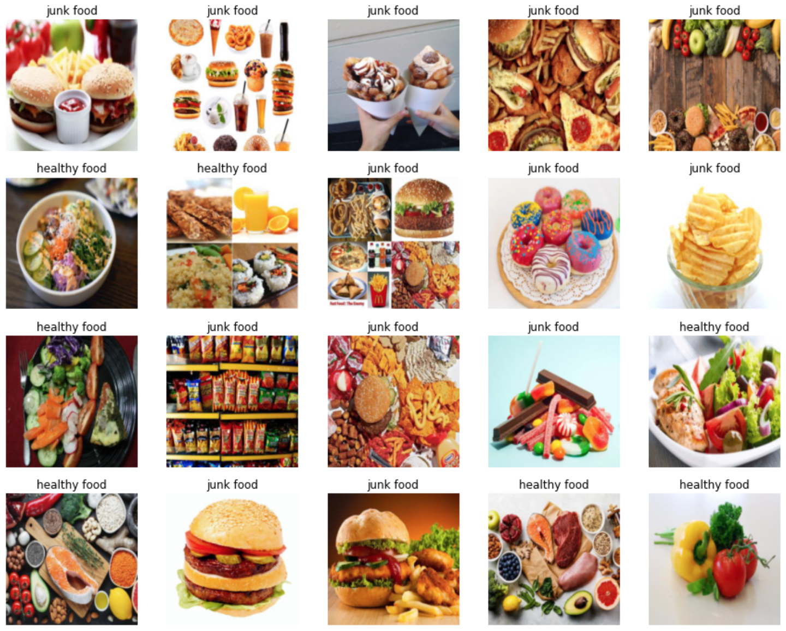
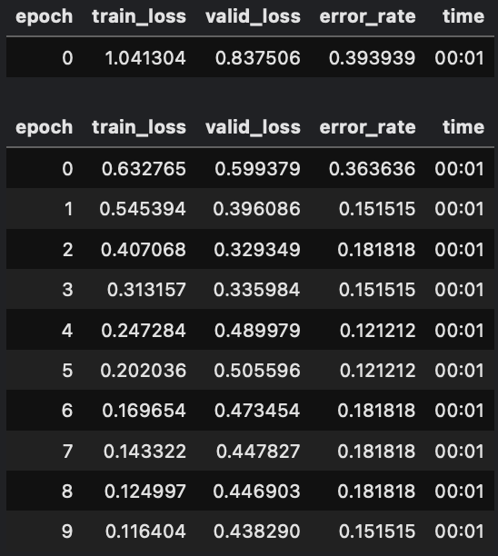
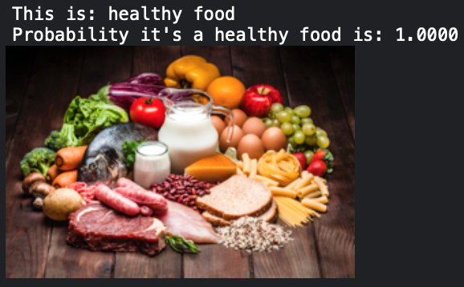
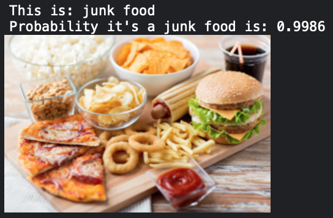
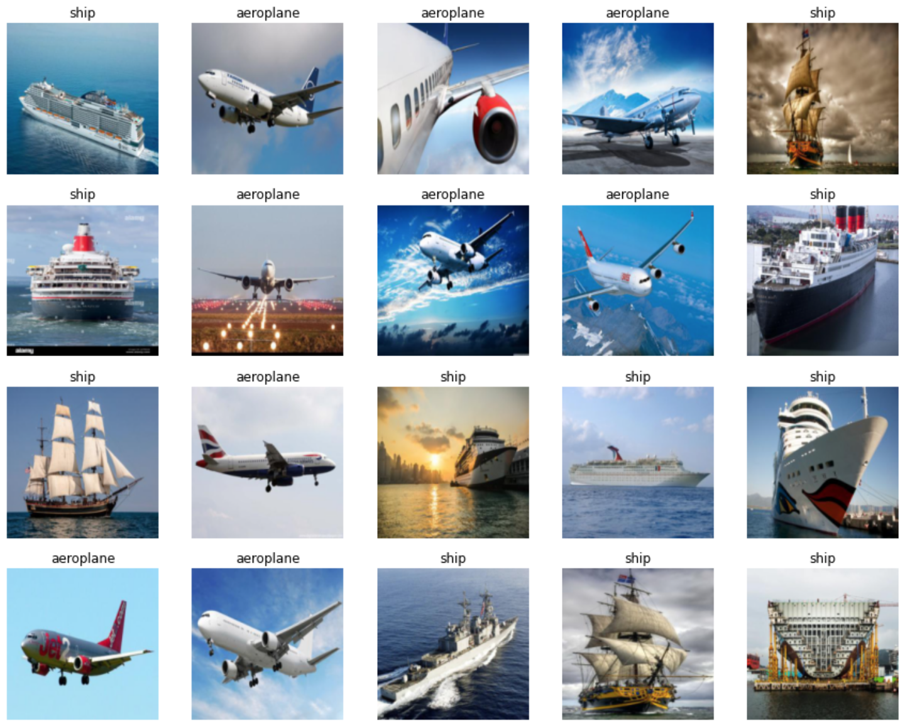
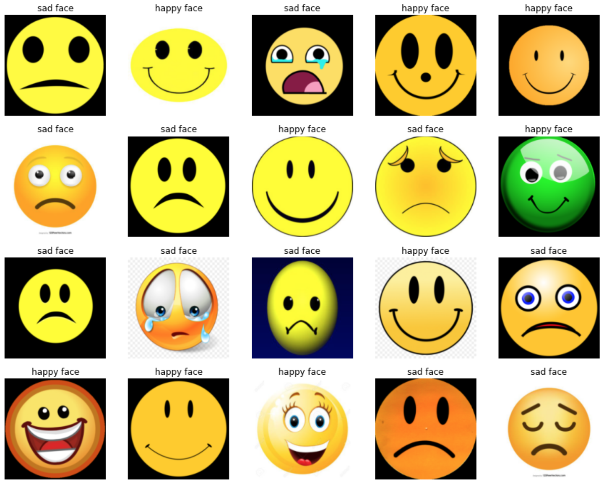
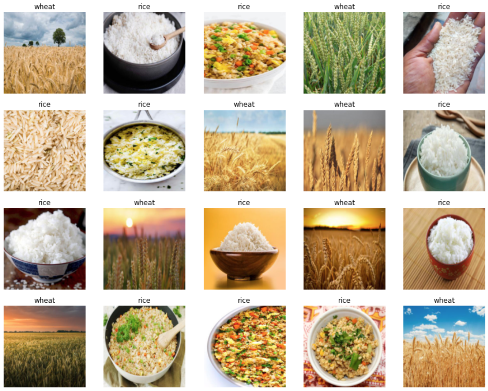
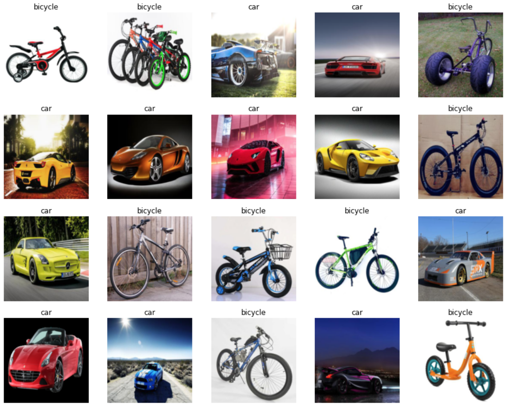

As part of Lesson 1 of the Practical Deep Learning for Coders course by Fast AI, I built some example classifiers.
Building an Image Classifier
The basic steps in building a classifier are:
- Download images
- Create datasets.
- Fine tune pre-trained model.
- Predict class label.
Step 1. Download images
For these examples, images are downloaded from DuckDuckGo using the helper function ddg_images which takes in a search term and returns a list of image URLs. Another helper function download_images downloads images from these URLs. Images of each class (Ex: Cat) are part of separate directories.
def search_images(term, max_images=200):
"""Search for images for the given text."""
print(f"Searching for '{term}'")
return L(ddg_images(term, max_results=max_images)).itemgot('image')
# Download images for each of the classes into it's own directory.
classes = ['rice', 'wheat']
path = Path('cereals')
for c in classes:
dest = (path/c)
dest.mkdir(exist_ok=True, parents=True)
download_images(dest, urls=search_images(f'{c}'))
resize_images(path/c, max_size=400, dest=path/c)Step 2. Create datasets
Images in directories are turned into tow datasets one for model training and another for model validation using the DataBlock class.
dls = DataBlock(
blocks=(ImageBlock, CategoryBlock),
get_items=get_image_files,
splitter=RandomSplitter(valid_pct=0.2, seed=42),
get_y=parent_label,
item_tfms=[Resize(192, method='squish')]
).dataloaders(path, bs=32)3. Fine tune pre-trained model
Next, we download pre-trained weights for a ResNet18 model and fine-tune the model on our dataset.

learn = vision_learner(dls, resnet18, metrics=error_rate)
learn.fine_tune(10)4. Predict class label
Finally, we make use of the predict method of the model class to get prediction on sample images.


url = search_images(classes[0], max_images=5)[0]
destination = 'sample.jpg'
download_url(url, destination, show_progress=False)
label, _, probability = learn.predict(PILImage.create('sample.jpg'))
print("This is: {}".format(label))
print("Probability it's a {} is: {:.4f}".format(classes[0], probability[0]))
im = Image.open(destination)
im.to_thumb(256,256)Examples



